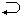
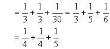

习题七解答
2．302=22×32×52，为找出它的全部因子，我们这里介绍“字典法则”：
20·30·50=1， 20·30·51=5， 20·30·52=25，
20·31·50=3， 20·31·51=15， 20·31·52=75，
20·32·50=9， 20·32·51=45， 20·32·52=225，
21·30·50=2， 21·30·51=10， 21·30·52=50，
21·31·50=6， 21·31·51=30， 21·31·52=150，
21·32·50=18， 21·32·51=90， 21·32·52=450，
22·30·50=4， 22·30·51=20， 22·30·52=100，
22·31·50=12， 22·31·51=60， 22·31·52=300，
22·32·50=36， 22·32·51=180， 22·32·52=900，
大家都知道英语字典排序规则，先有a部，再看第二个字母的顺序，第二个字母相同时，看第三个字母的顺序，等等.这里因子的幂值正好借用作顺序编号.（当然上题每个因子恰好是2次幂，如别的也一样，如：23×22×51的因子字典法排序为：
回到本题，302的27个因子从小到大按方向“”排序为：
其实只要排出30以下，另一头用302的互补因子即可，利用
立即知x+y=60+t+t'.现在问题转化成求t+t'的最大最小值问题了.这里要求小学生会联想和类比，大家知道等积问题的一种结论：面积固定的长方形中，正方形的周长最小.或者两数乘积不变的情况下，两数相等时和最小。
现在t·t'=302固定，要t+t'最小，当然是t=t'=30，所以x+y最小为120。
那么x+y最大，也即60+t+t'最大，经前面t，t'排成二行的表一看就知为60+900+1=961。
>
因此

因此
5.首先设x≤y≤z，因为显然不会有x=y=z的解.由推广的抽屉原理：

又因x必须是整数，所以x可能的值只有：2、3、4。
利用前面知识52只有两组互补因子（1，25），（5，5），所以推知（y，
运用推广的抽屉原理。
∴y可能取值为：3、4、5.
y为整数，∴y=3、4。
∵x≤y，∴y只可能为4。
综合情况①②③，所有解为：
